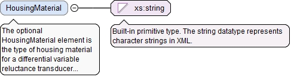

<xs:element name="MinMeasuringDistance" type="LinearValueType" minOccurs="0"><xs:annotation><xs:documentation>The optional MinMeasuringDistance element is the minimum measuring distance.</xs:documentation></xs:annotation></xs:element>
<xs:element name="MaxMeasuringDistance" type="LinearValueType" minOccurs="0"><xs:annotation><xs:documentation>The optional MaxMeasuringDistance element is the maximum measuring distance.</xs:documentation></xs:annotation></xs:element>
<xs:element name="Hysteresis" type="LinearValueType" minOccurs="0"><xs:annotation><xs:documentation>The optional Hysteresis element is the hysteresis of a Differential Variable Reluctance Transducer (DVRT) sensor.</xs:documentation></xs:annotation></xs:element>
The (required) UnitName attribute is the unit name for the UserDefinedUnitValueType.
Source
<xs:element name="FrequencyResponse" type="UserDefinedUnitValueType" minOccurs="0"><xs:annotation><xs:documentation>The optional FrequencyResponse element is the response frequency of a Differential Variable Reluctance Transducer (DVRT) sensor for rapid responses.</xs:documentation></xs:annotation></xs:element>
The (required) UnitName attribute is the unit name for the UserDefinedUnitValueType.
Source
<xs:element name="TemperatureStability" type="UserDefinedUnitValueType" minOccurs="0"><xs:annotation><xs:documentation>The optional TemperatureStability element is the temperature stability of a linear variable differential transducer sensor.</xs:documentation></xs:annotation></xs:element>
The optional HousingMaterial element is the type of housing material for a differential variable reluctance transducer (DVRT).
Diagram

Type
xs:string
Properties
content
simple
minOccurs
0
Source
<xs:element name="HousingMaterial" type="xs:string" minOccurs="0"><xs:annotation><xs:documentation>The optional HousingMaterial element is the type of housing material for a differential variable reluctance transducer (DVRT).</xs:documentation></xs:annotation></xs:element>
The required id attribute is the QIF id of the measurement resource, used for referencing.
Source
<xs:complexType name="DifferentialVariableReluctanceTransducerSensorType"><xs:annotation><xs:documentation>The DifferentialVariableReluctanceTransducerSensorType defines a differential variable reluctance transducer (DVRT).</xs:documentation></xs:annotation><xs:complexContent><xs:extension base="SensorType"><xs:sequence><xs:element name="MinMeasuringDistance" type="LinearValueType" minOccurs="0"><xs:annotation><xs:documentation>The optional MinMeasuringDistance element is the minimum measuring distance.</xs:documentation></xs:annotation></xs:element><xs:element name="MaxMeasuringDistance" type="LinearValueType" minOccurs="0"><xs:annotation><xs:documentation>The optional MaxMeasuringDistance element is the maximum measuring distance.</xs:documentation></xs:annotation></xs:element><xs:element name="Hysteresis" type="LinearValueType" minOccurs="0"><xs:annotation><xs:documentation>The optional Hysteresis element is the hysteresis of a Differential Variable Reluctance Transducer (DVRT) sensor.</xs:documentation></xs:annotation></xs:element><xs:element name="FrequencyResponse" type="UserDefinedUnitValueType" minOccurs="0"><xs:annotation><xs:documentation>The optional FrequencyResponse element is the response frequency of a Differential Variable Reluctance Transducer (DVRT) sensor for rapid responses.</xs:documentation></xs:annotation></xs:element><xs:element name="TemperatureStability" type="UserDefinedUnitValueType" minOccurs="0"><xs:annotation><xs:documentation>The optional TemperatureStability element is the temperature stability of a linear variable differential transducer sensor.</xs:documentation></xs:annotation></xs:element><xs:element name="HousingMaterial" type="xs:string" minOccurs="0"><xs:annotation><xs:documentation>The optional HousingMaterial element is the type of housing material for a differential variable reluctance transducer (DVRT).</xs:documentation></xs:annotation></xs:element></xs:sequence></xs:extension></xs:complexContent></xs:complexType>